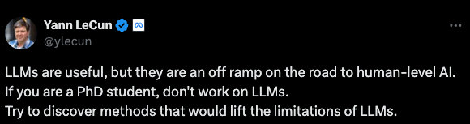
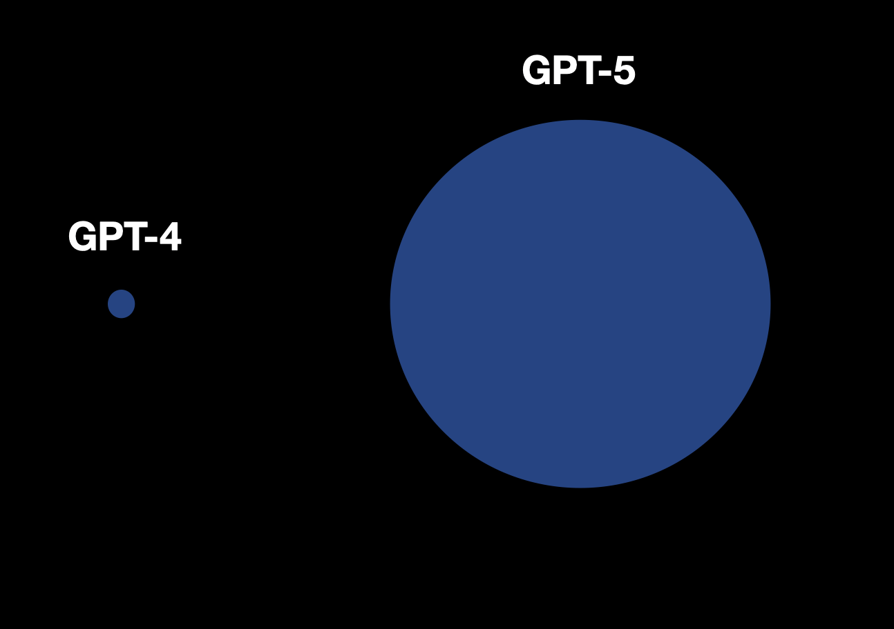
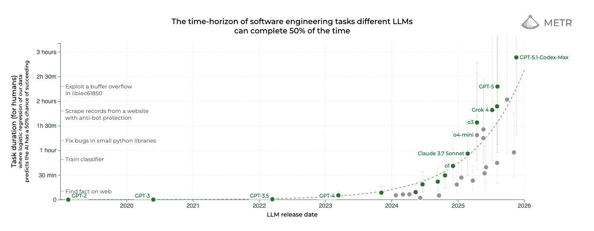
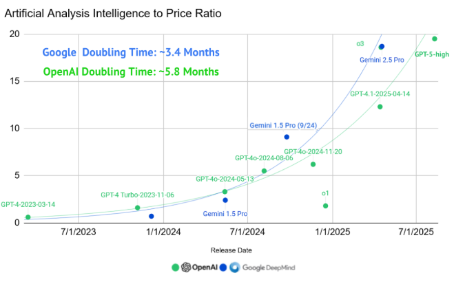

Sparks of Artificial General Intelligence were first reported when OpenAI released GPT-4 in March 2023. 2 years and several months later, some may say we are yet to see the flames. Whether autoregressive language models are a straight shot to superintelligence or an off ramp on the journey there is a highly overplayed debate that I will abstain from engaging in. It is, however, increasingly obvious to me that the sparks we saw were symbolic of a new chapter of human pursuit.

In 2023, the world woke up to the realization that 1. We have the compute and infrastructure to run ungodly parallel workloads consuming tens of gigawatts of energy, and 2. The learning algorithms we have (neural networks, and more particularly transformers), are incredible at learning low-loss representations of petabytes of data while optimizing for a generalized objective. AlexNet 2.0.
Since then, we've seen similar recipes produce captivating results in a number of unique domains. Image generation models like Midjourney, video generation models like Runway's Gen-4.5, generalist robot policies from Physical Intelligence, human-like self-driving models from Tesla and Wayve, all apply different variations of the same sets of techniques. As a consequence of this technology, the world today is very different from the world 10 years ago (despite the fact that our primate brains are great at normalizing exponentials).
When GPT-4 was released, a bunch of images like the following went viral.

The implication was that the jump from GPT-4 to GPT-5 would represent an increase of several orders of magnitude in the model's parameter count. While the number of parameters in the GPT-5 model is unknown to the public, I'd wager that it is roughly of the same order of magnitude as its whole number predecessor. This is not to say the models aren't an order of magnitude better. There are a number of different evaluations that demonstrate the exponential improvement of models at performing useful tasks. One that I particularly like is METR's "Measuring AI Ability to Complete Long Tasks," which benchmarks models based on how long the tasks they can autonomously complete would take human experts. The length of tasks models can coherently perform to a high degree has grown astoundingly.

Task completion time horizons have been doubling every ~7 months. Source: METR
We haven't actually entered the next era of truly gigantic training runs yet: we don't have enough purpose-built datacenters, and even the biggest clusters we do have are bottlenecked by physical infrastructure (power, cooling, networking, energy), and software infrastructure (fault-tolerant distributed training orchestration, high-throughput data pipelines, robust checkpointing and recovery). Most of the gains above have come from squeezing more out of roughly the same hardware: better kernels and architectures (flash attention, GQA, MLA, MoE and more), smarter training setups with synthetic data and reinforcement learning, and a willingness to spend far more compute at inference time instead of only during model training. There's no reason we can't build a "2024-tier" model on "2020-tier" hardware in 2025 using modern recipes; you can already see this in hobby projects that replicate frontier behavior in small models on aging GPUs.
The floor is dropping on the cost per unit of intelligence while in the background the ceiling is rising on how much compute and capital we can throw at the problem at once. Bigger, better infrastructure doesn't just let us run single massive jobs, it lets us run many more jobs, ablations, and wild ideas in parallel. The compounding of those two trends will ensure that the exponential stays exponential and that this idea extends beyond language-driven domains like software engineering.

Source: State of AI Report 2025, Air Street Capital
In the 1880s, early electric lighting felt like the whole story. Bulbs and arc lamps were a visible miracle (something the general public could see and feel the impact of themselves) and that's where attention and capital flowed. But the real revolution wasn't the bulb; it was the grid. The hard, unglamorous work of laying copper, building generators, standardizing voltages, and wiring cities turned electricity from a spectacle into infrastructure. Once the grid existed, the world reorganized itself around it: factories, cities, communication, transportation, healthcare, even human sleep cycles changed. We then built infinitely many more visible miracles with this infrastructure and a matured understanding of how we can optimally use it.
A century later, the same story played out again with the internet. In the 1990s, everyone thought the revolution was websites. The bubble inflated around shiny domains and digital stores like pets.com. But the real transformation came later, when the boring parts matured. Servers, fiber optics, data centers, protocols, software and cloud infrastructure rewired the entire economy. The bubble popped, but the foundations it left behind built everything we use today.
We're in a similar place now with synthetic intelligence. There's a lot of focus on bulb development (which is fair and warranted) but not enough people removed from the frontier are thinking about the grid. The real story of the 2020s will be the world we build for our synthetic counterparts to inhabit.
Over the next decade, we'll build the infrastructure and improve algorithmic data efficiency to lay the foundation for the next century.